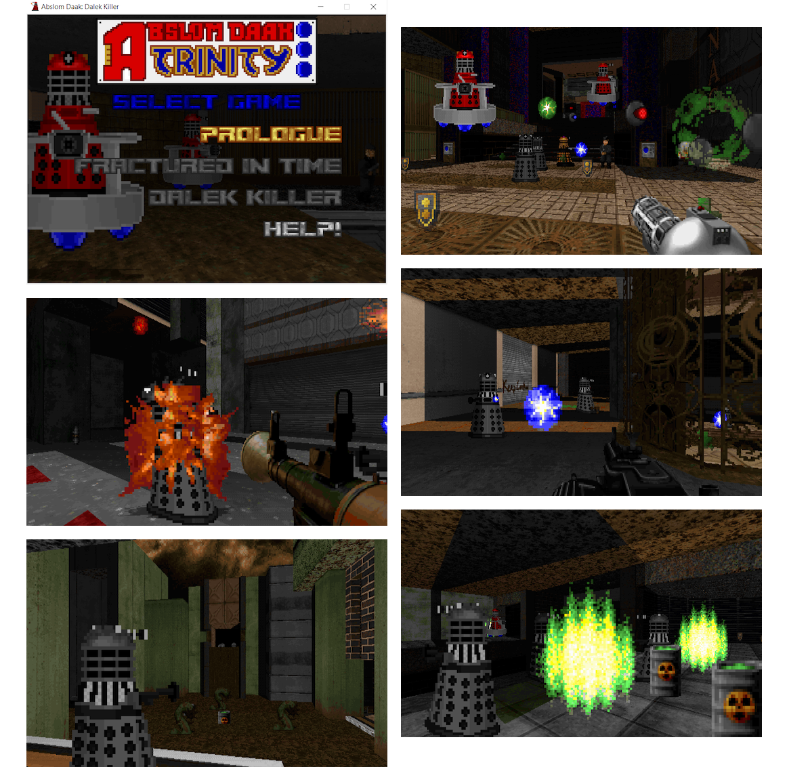

The first game in the Trinity is ready to download. The Daleks are constructing a time corridor into their own history in order to turn their defeats into victories. They dare tamper with the forces of creation, and you must dare to stop them.
This game is a single-map demonstration of things to come in the Trinity. It serves as a narrative prologue and an introduction to some of the gameplay mechanics.
This project was made by Freazy Warr. You can visit my site here. Alternatively, you can find me on Doomworld, TikTok, YouTube, Reddit, and Instagram.